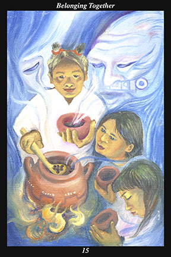

 | IMAGEA female warrior serves a simple but nutritious meal to her family. While her children wait to receive their portion, the steam rises to give form to the spirits of the ancestors, who are a vital part of the reunion. |
INTERPRETATION
This hexagram represents the rituals of everyday life that bind people together in harmony and shared emotions. The female warrior here symbolizes the gentle, caring, and nurturing part of a person. The ancestors here symbolize the guardian spirits, whose love and concern for the living is immeasurable. The children here symbolize the living potential of the future, which blossoms fully only when it grows out of the rich tradition of loving families and ennobling homes. Taken together, these symbols mean that you actively seek to establish the kind of life in which you can nourish—and can be nourished by—all that is good and genuine dwelling in the past, present, and future. The food here symbolizes
benefit, which always addresses need as if it were a hunger. The steam here symbolizes the spirit of cooked food and its smells, which forever anchor us to the shared blessing of mealtimes. The cooking fire here symbolizes the hearth, the center of the home, around which all belong. The bowls here symbolize the attitude of acceptance and gratitude with which great warriors acknowledge their dependence on the generosity of nature and spirit. Taken together, these symbols mean that you actively seek to create rituals of everyday life that fulfill and encourage those you call family—that you actively seek to create rituals of everyday life that consecrate and honor that which you call home.
ACTION
The feminine half of the spirit warrior gazes at the masculine half, offering him his bowl and welcoming him into the sacred space of the shared heart. Those who have been injured react by taking up a defensive posture, adopting the masculine force in order to protect the vulnerable potential in their care. Necessary and successful as such a strategy may have been, its time is past and its effectiveness coming to an end: now is the time to break through your distrust, drop your defenses, and reclaim the sense of childlike innocence, openness, and safety that is your indisputable birthright. Return to those rituals which bring you closer to who and what you love, sharing them in order to keep them alive through others. Create new rituals of everyday life where they are needed, sharing them in order to give your vision and experience concrete form. Make the simple rituals of home life more sacred, more profound, and more symbolic by inviting more visits from your physical and spiritual ancestors. Keep in mind that upon your passing you will become one of the ancestors and that neither your love nor concern for those with whom you belong will ever end—such a perspective ensures that your connection to the ancestors remains strong and harmonious throughout your life.
INTENT
If you do not feel grateful for what you have, imagine what your life would be without it. If you do not feel appreciative for those around you, imagine what your life would be without them. Keep in mind the impermanence of everything you love, formalizing your heartfelt kinship through rituals by which all that you love might receive ever greater blessings. By not taking for granted the activities of everyday life, you recognize them as the very rituals of your spiritual practice—by not trivializing the activities of everyday life, you recognize them as the very exercises of the warrior’s training. The simpler and more basic an activity is, the more essential and indispensable it is: the present generation must learn from the ancestors what it is that they miss most in order to make decisions that maintain the continuity of
benefit running from the distant past to the far future. The basis of these simple things is the same basis from which all great creations spring: it is that which sustains life and spirit that brings people together in an ever widening sense of meaningful communion, community, and culture. All of life, from the distant past to the far future, is bound together by the daily ritual of eating food: opening our hearts to the ways in which we are not different is both the first and last step in the journey home.
SUMMARY
Do not forget those who count on you. Bring new allies into your circle, don’t leave existing allies in order to join a new circle. It is essential to maintain the continuity of long-standing rituals and relationships. Fill your heart by pouring out all your loving-kindness daily, surround yourself with love and acceptance by being loving and accepting. Be generous in thought, word, and deed.
THE LINE CHANGES
1° Standards are established before you arrive on the scene. You are powerless until you know the opponent, yourself, and the surrounding circumstances intimately. Begin the long steep climb of experience and leave the work of correcting to others for now.
2° A single word, a single act, when arising from innocence and good will, can tip the scales of a stagnant equilibrium into righting itself. It is not necessary to know the consequences ahead of time. All you need is faith in the cohesiveness of the nucleus.
3° Do not just spend time discussing plans with your allies—make yourself the go-between with everyone in the opposition that you can reach. The opposing leadership cannot win if its soldiers fight half-heartedly. Convince the open-minded that their leaders are corrupted.
4° In the middle of the river, people stop rowing—it is further and more difficult than they imagined. In its death throes, the old leadership puts up a final resistance of vicious delaying tactics—do not get unnerved. Deport yourself as if victory were already complete—start fulfilling your promises.
5° When poor people win the lottery, they act like rich people overnight—when ordinary citizens become leaders, they act like leaders overnight. From the very beginning, conduct yourself like a great statesman, not a vicious general. Convert the old leadership—do not destroy them.
6° New standards are established at the end—they may reestablish peace and stability but they cannot prevent future reversals. The momentum of reform cannot last—the new eventually becomes the old and corrupt people again assert themselves. The field must be plowed anew every spring.